B-21 Raider

The Northrop Grumman B-21 Raider is an American strategic bomber under development for the United States Air Force (USAF) by Northrop Grumman. As part of the Long Range Strike Bomber (LRS-B) program, it is to be a long-range, stealth intercontinental strategic bomber for the USAF, able to deliver conventional and thermonuclear weapons. The Air Force intends the B-21 to replace the Rockwell B-1 Lancer and Northrop Grumman B-2 Spirit by 2040, and possibly the Boeing B-52 Stratofortress after that.
The Air Force began planning for the B-21 in 2011[5] and awarded the major development contract in 2015.[6] The B-21 is expected to make its first flight in 2023 and enter service by 2027.[7][8] Many aspects of the B-21 program are highly classified; the program is designated as a special access program.[4]
For Additional Information: Click Here
B-2 Spirit

The Northrop Grumman B-2 Spirit, also known as the Stealth Bomber, is an American heavy strategic bomber designed for penetrating dense anti-aircraft defenses. It is capable of carrying both conventional and nuclear weapons and has a unique flying-wing design. The B-2 Spirit is known for its advanced stealth technology, making it nearly invisible to enemy radar.
The Air Force began planning for the B-21 in 2011[5] and awarded the major development contract in 2015.[6] The B-21 is expected to make its first flight in 2023 and enter service by 2027.Many aspects of the B-21 program are highly classified; the program is designated as a special access program
Learn more about B-2 Spirit
<
B-52 Stratofortress

The Boeing B-52 Stratofortress is an American long-range, subsonic strategic bomber. It has been in service with the United States Air Force since the 1950s and is one of the most iconic bomber aircraft in history. The B-52 has been adapted for various roles over the years and continues to serve as a vital part of the U.S. strategic bomber fleet.
Beginning with the successful contract bid in June 1946, the B-52 design evolved from a straight wing aircraft powered by six turboprop engines to the final prototype YB-52 with eight turbojet engines and swept wings. The B-52 took its maiden flight in April 1952. Built to carry nuclear weapons for Cold War–era deterrence missions, the B-52 Stratofortress replaced the Convair B-36 Peacemaker. A veteran of several wars, the B-52 has dropped only conventional munitions in combat. The B-52's official name Stratofortress is rarely used; informally, the aircraft has become commonly referred to as the BUFF (Big Ugly Fat Fucker/Fella).
Learn more about B-52 Stratofortress
B-1B Lancer
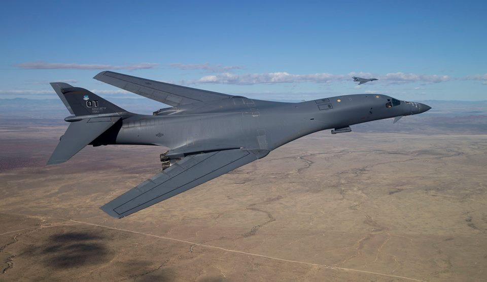
The Rockwell B-1B Lancer, commonly known as the B-1, is an American supersonic variable-sweep wing, heavy bomber. It is capable of carrying a variety of weapons and has been used in both conventional and nuclear roles. The B-1B Lancer is known for its speed and versatility, making it a valuable asset to the United States Air Force.
The B-1 was first envisioned in the 1960s as a platform that would combine the Mach 2 speed of the B-58 Hustler with the range and payload of the B-52, and was meant to ultimately replace both bombers. After a long series of studies, Rockwell International (now part of Boeing) won the design contest for what emerged as the B-1A. This version had a top speed of Mach 2.2 at high altitude and the ability to fly for long distances at Mach 0.85 at very low altitudes. The combination of the high cost of the aircraft, the introduction of the AGM-86 cruise missile that flew the same basic speed and distance, and early work on the B-2 stealth bomber reduced the need for the B-1. The program was canceled in 1977, after the B-1A prototypes had been built.
Learn more about B-1B Lancer
Tupolev Tu-95
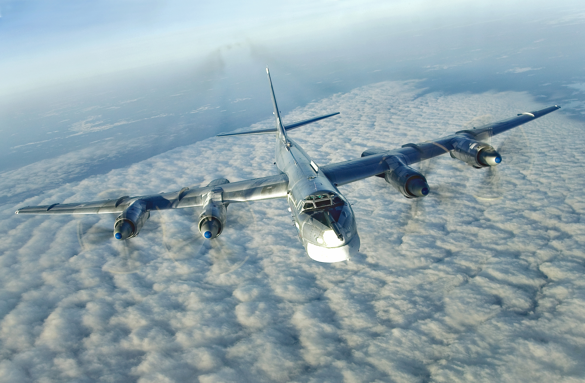
The Tupolev Tu-95 is a Russian turboprop-powered strategic bomber and missile platform. It is often referred to as the "Bear" by NATO. The Tu-95 is one of the most iconic strategic bombers in the Russian Air Force and is known for its distinctive propeller-driven design.
The aircraft has four Kuznetsov NK-12 engines with contra-rotating propellers. It is the only propeller-powered strategic bomber still in operational use today. The Tu-95 is one of the loudest military aircraft, particularly because the tips of the propeller blades move faster than the speed of sound.[1] Its distinctive swept-back wings are set at an angle of 35°. The Tu-95 is the only propeller-driven aircraft with swept wings that has been built in large numbers.
Learn more about Tupolev Tu-95
TU-160 Blackjack
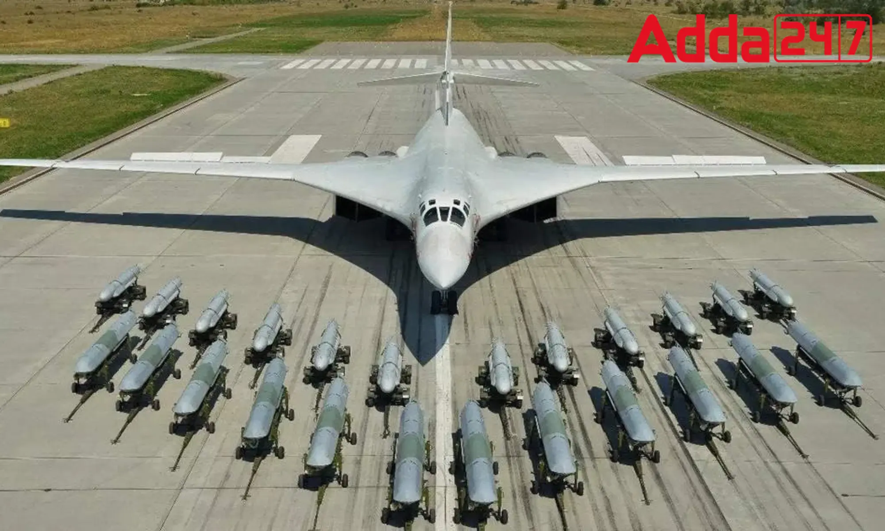
The Tupolev TU-160 Blackjack is a supersonic, variable-sweep wing heavy strategic bomber designed by the Soviet Union. It is one of the largest and heaviest combat aircraft in the world, with a maximum takeoff weight exceeding 275,000 kilograms. Powered by four turbofan engines, the TU-160 has a remarkable top speed of over Mach 2 and a range of approximately 12,300 kilometers (7,643 miles).
In addition to its long-range strike capabilities, the TU-160 is equipped with advanced avionics, electronic warfare systems, and air-to-surface missiles, making it a formidable strategic asset for the Russian Air Force. The aircraft has been in service since the 1980s and continues to play a crucial role in Russia's defense strategy.
Learn more about TU-160 Blackjack
TU-22 Backfire
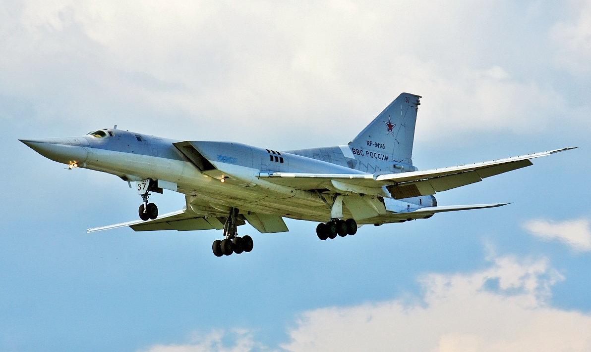
The Tupolev TU-22 Backfire is a supersonic, swing-wing, long-range strategic and maritime strike bomber developed by the Soviet Union. Introduced in the 1960s, the TU-22 has been a versatile workhorse for the Russian military. It has a maximum speed of approximately Mach 1.88 and an operational range of around 6,800 kilometers (4,225 miles).
Originally designed for strategic bombing missions, the TU-22 was later modified to carry anti-ship missiles, making it a potent naval asset. Its ability to perform both strategic and maritime roles has contributed to its long-lasting service in the Russian Air Force and Naval Aviation. The aircraft is equipped with radar and avionics systems for effective target acquisition and engagement.
Learn more about TU-22 Backfire
F-15 Eagle

The McDonnell Douglas F-15 Eagle is an American twin-engine, all-weather tactical fighter aircraft designed by McDonnell Douglas (now part of Boeing). Following reviews of proposals, the United States Air Force (USAF) selected McDonnell Douglas's design in 1969 to meet the service's need for a dedicated air superiority fighter. The Eagle first flew in July 1972 and entered service in 1976. It is among the most successful modern fighters, with over 100 victories and no losses in aerial combat, with the majority of the kills by the Israeli Air Force.
For Additional Information: Click Here
F-22 Raptor

The Lockheed Martin F-22 Raptor is an American single-seat, twin-engine, supersonic all-weather stealth fighter aircraft developed for the United States Air Force (USAF). As a product of the USAF's Advanced Tactical Fighter (ATF) program, the aircraft was designed as an air superiority fighter but also incorporates ground attack, electronic warfare, and signals intelligence capabilities. The prime contractor, Lockheed Martin, built most of the F-22's airframe and weapons systems and conducted final assembly, while Boeing provided the wings, aft fuselage, avionics integration, and training systems.
For Additional Information: Click Here
F-35 Lightning 2
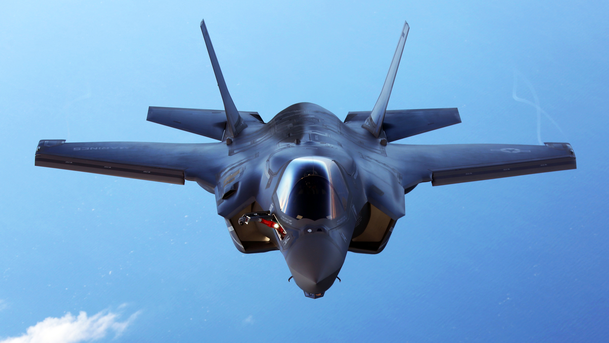
The Lockheed Martin F-35 Lightning II is an American family of single-seat, single-engine, all-weather stealth multirole combat aircraft that is intended to perform both air superiority and strike missions. It is also able to provide electronic warfare and intelligence, surveillance, and reconnaissance capabilities. Lockheed Martin is the prime F-35 contractor, with principal partners Northrop Grumman and BAE Systems. The aircraft has three main variants: the conventional takeoff and landing (CTOL) F-35A, the short take-off and vertical-landing (STOVL) F-35B, and the carrier-based (CV/CATOBAR) F-35C.
For Additional Information: Click Here
F-16 Fighting Falcon

The General Dynamics F-16 Fighting Falcon is a single-engine, multirole fighter aircraft originally developed by General Dynamics (now Lockheed Martin) for the United States Air Force. It is a highly maneuverable aircraft and has been used by many air forces worldwide. The F-16 is known for its versatility and has been adapted for various combat roles.
Learn more about F-16 Fighting Falcon
F/A-18 Hornet
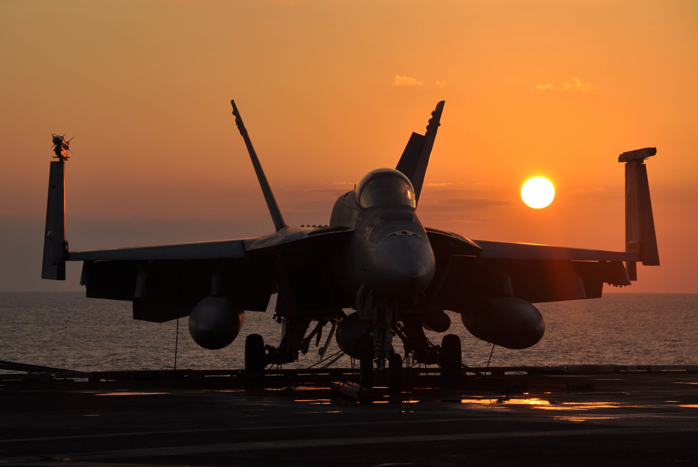
The McDonnell Douglas (now Boeing) F/A-18 Hornet is a twin-engine, supersonic, all-weather, carrier-capable multirole combat jet. It has been used by the United States Navy and Marine Corps, as well as several other countries. The F/A-18 is known for its versatility in both air-to-air and air-to-ground missions.
Learn more about F/A-18 Hornet
Sukhoi Su-35
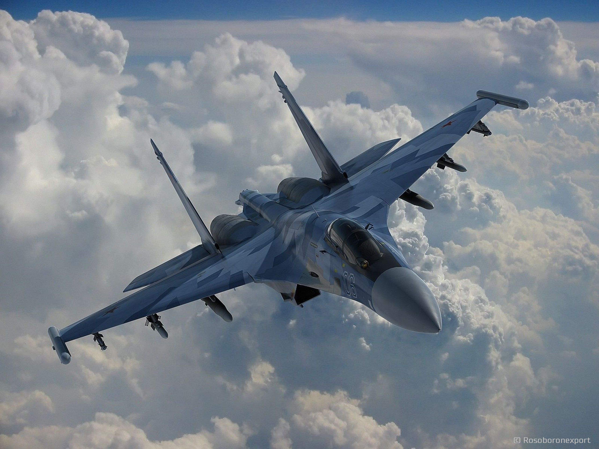
The Sukhoi Su-35 is a Russian twin-engine, supermaneuverable fighter aircraft. It is an advanced derivative of the Su-27 and is designed for air superiority and air-to-ground missions. The Su-35 is known for its agility and advanced avionics.
Learn more about Sukhoi Su-35
Sukhoi Su-30MKI

The Sukhoi Su-30MKI is a Russian-Indian twinjet multirole air superiority fighter. It is developed by Russia's Sukhoi Corporation and built under license by India's Hindustan Aeronautics Limited (HAL) for the Indian Air Force. The Su-30MKI is known for its capability to perform various combat roles.
Learn more about Sukhoi Su-30MKI
Sukhoi Su-57

The Sukhoi Su-57, also known as the PAK FA, is a Russian fifth-generation stealth fighter aircraft. It is designed for air superiority and advanced air-to-surface strike capabilities. The Su-57 features advanced stealth technology and is part of Russia's efforts to modernize its fighter fleet.
Learn more about Sukhoi Su-57
Minuteman III
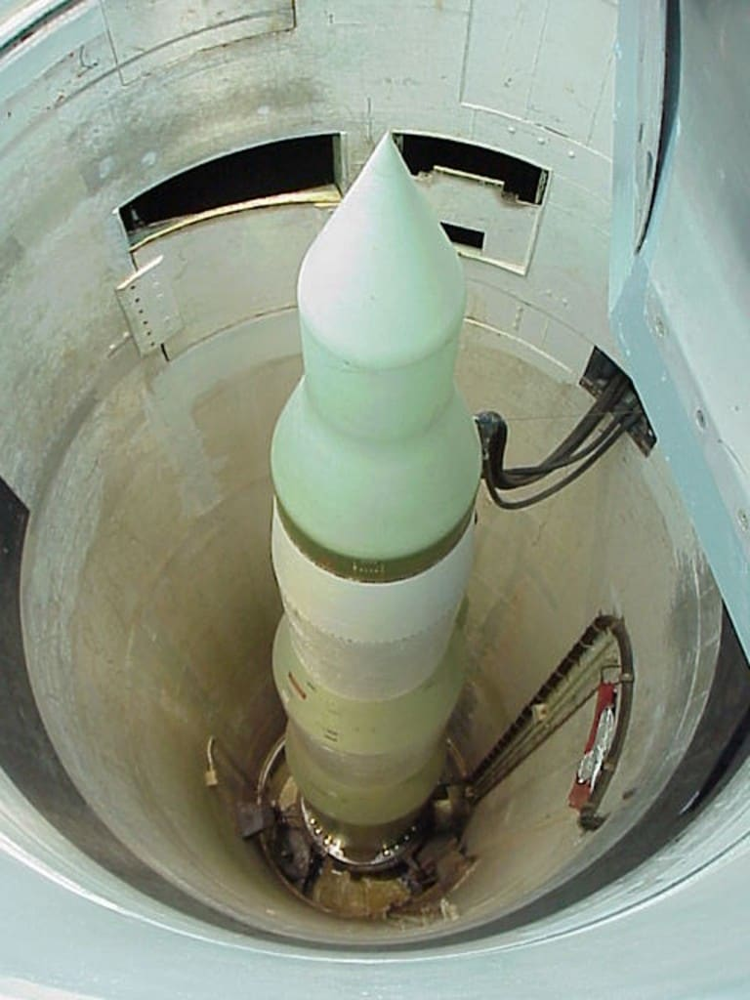
The LGM-30 Minuteman is a U.S. land-based intercontinental ballistic missile (ICBM), in service with the Air Force Global Strike Command. As of 2021, the LGM-30G Minuteman III version is the only land-based ICBM in service in the United States and represents the land leg of the U.S. nuclear triad, along with the Trident submarine-launched ballistic missile (SLBM) and nuclear weapons carried by long-range strategic bombers.
Learn more about Minuteman III
USS Poseidon (C-3)

The UGM-73 Poseidon missile was a type of ballistic missile armed with nuclear warheads, deployed on board United States Navy submarines as a sea-based strategic deterrent from 1971 to 1992. The Poseidon missile was the second type of ballistic missile, after the Polaris A-3, to be used by the U.S. Navy's ballistic missile submarines. It replaced the earlier Polaris missiles as the primary nuclear-capable ballistic missile in the U.S. Navy's sea-based nuclear arsenal.
Learn more about Poseidon (C-3)
LGM-118 Peacekeeper (MX)

The LGM-118 Peacekeeper, also known as MX (for Missile-eXperimental), was a land-based ICBM deployed by the United States starting in 1986. The Peacekeeper was a MIRV missile that could carry up to ten independently targeted nuclear warheads. It was intended to be a key component of the U.S. strategic nuclear deterrent during the last years of the Cold War. The missile was retired in 2005.
Learn more about Peacekeeper (MX)
C-5 Galaxy

The Lockheed C-5 Galaxy is a large military transport aircraft developed by Lockheed. It provides the United States Air Force (USAF) with a heavy intercontinental-range strategic airlift capability, one that can carry outsized and oversized loads.
The C-5M Super Galaxy version is an upgraded version with new engines and modern avionics. It has a cargo capacity of over 122 tons, making it one of the largest military aircraft in the world.
Learn more about C-5 Galaxy
C-17 Globemaster III
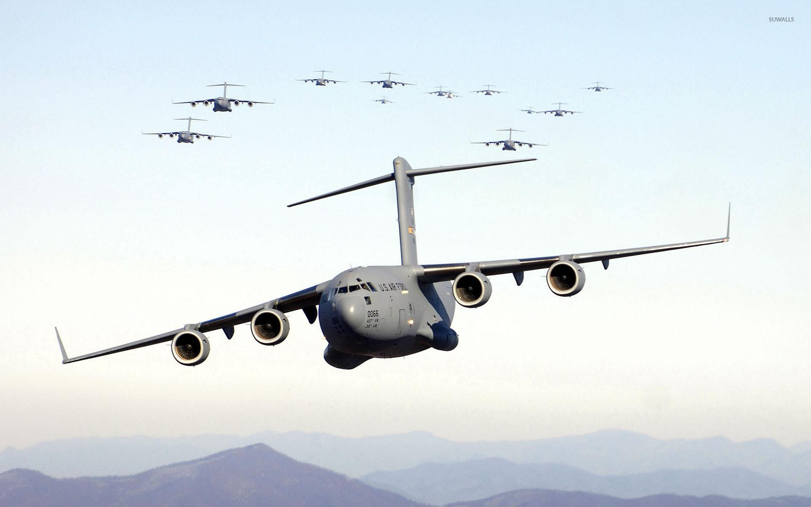
The Boeing C-17 Globemaster III is a large military transport aircraft. It is used for rapid strategic airlift of troops and cargo to main operating bases or forward operating bases throughout the world.
The C-17 is capable of carrying large equipment, supplies, and troops directly to small airfields in harsh terrain. It can also perform tactical airlift and airdrop missions when required.
Learn more about C-17 Globemaster III
C-130 Hercules
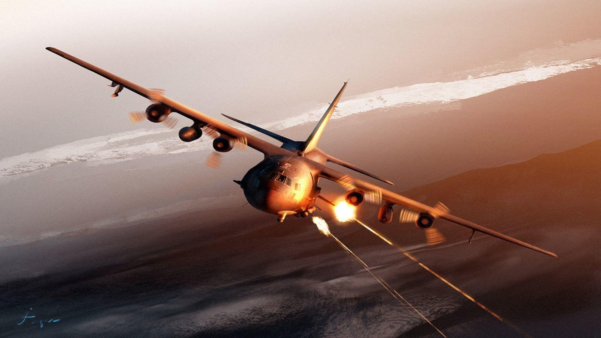
The Lockheed C-130 Hercules is a versatile military transport aircraft with various missions, including airlift support, medevac, weather reconnaissance, and electronic surveillance.
The C-130 is known for its ability to operate from austere airfields and land on short and unpaved runways. It has been widely used by many military forces around the world.
Learn more about C-130 Hercules
C-295
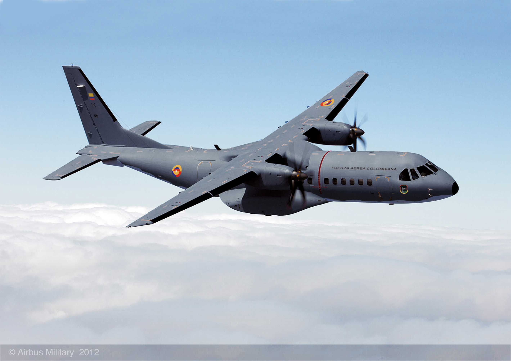
The Airbus C-295 is a twin-turboprop tactical military transport aircraft. It is used for a variety of missions, including troop transport, cargo airlift, medical evacuation, and maritime patrol.
The C-295 is designed to operate in austere environments and can take off and land on rough and short airstrips. It offers a good balance between payload capacity and operational range.
Learn more about C-295
AN-225 Mriya

The Antonov AN-225 Mriya is a strategic airlift cargo aircraft that was designed by the Antonov Design Bureau in the Ukrainian SSR within the Soviet Union during the 1980s. It is the world's heaviest cargo aircraft.
The AN-225 is used for transporting heavy and oversized cargo. It holds various world records for cargo transportation, including the heaviest single cargo item ever.
Learn more about AN-225 Mriya